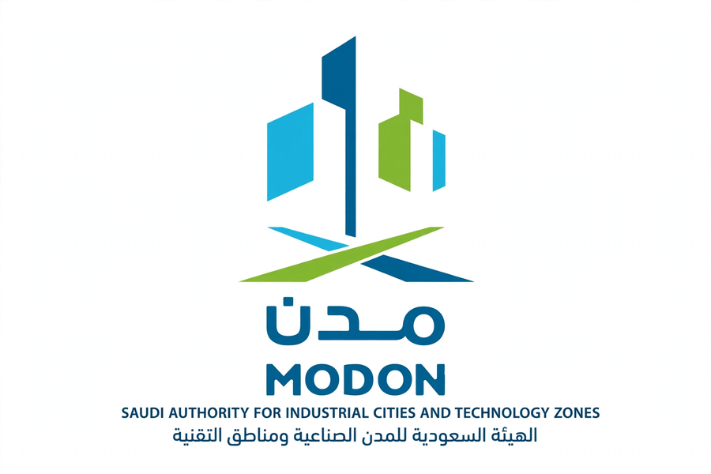
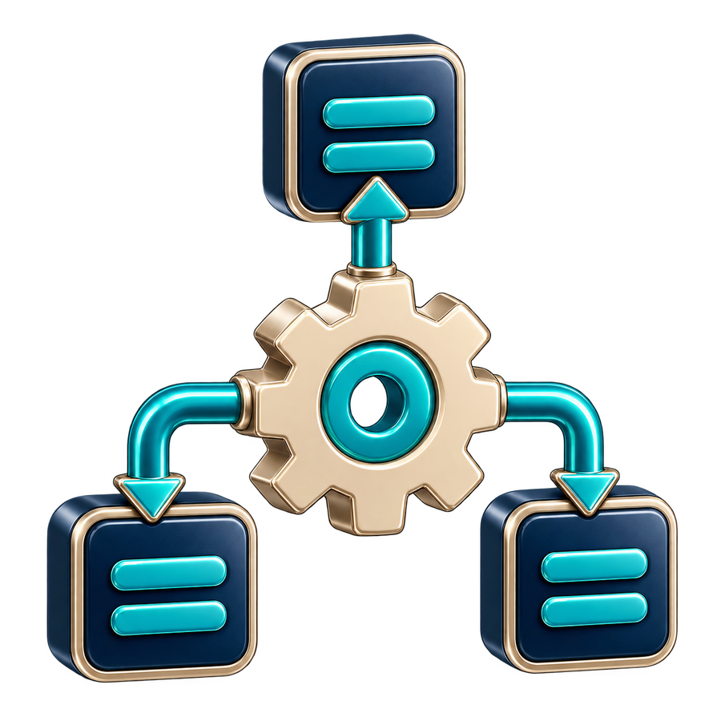

Featured engagement

MODON management systems transformation
Seven management systems projects alongside the quality culture project, covering MODON's headquarters and its 35 industrial cities.
7Management systems projects
35Industrial cities, plus the headquarters
1Quality culture project
MODON project scope
1Headquarters
35Industrial cities
The project covered headquarters and industrial cities.

7 projectsfor management systems1 projectfor quality culture
QualityCustomer satisfactionOccupational health & safetyInnovationBusiness continuityRiskIntegrated management